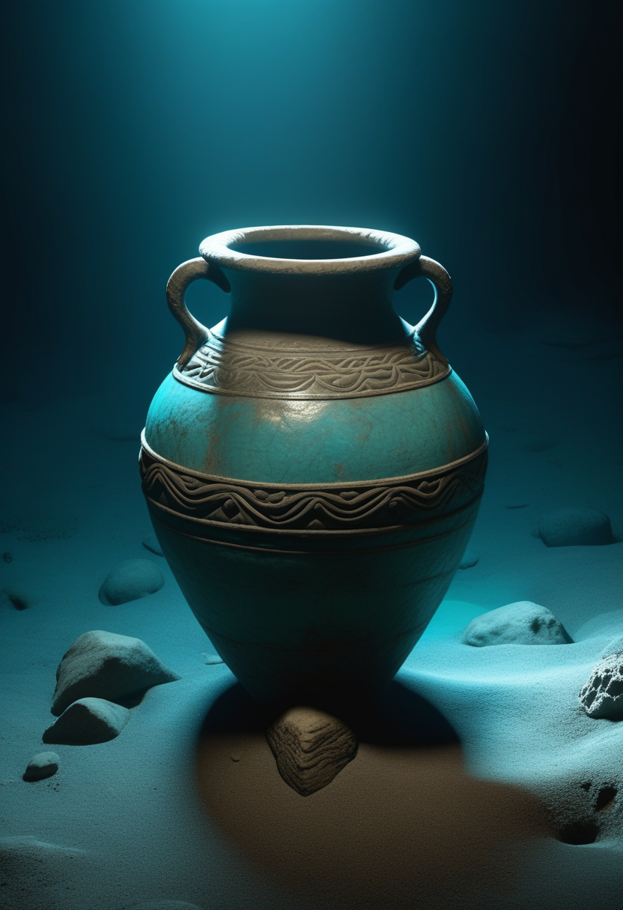
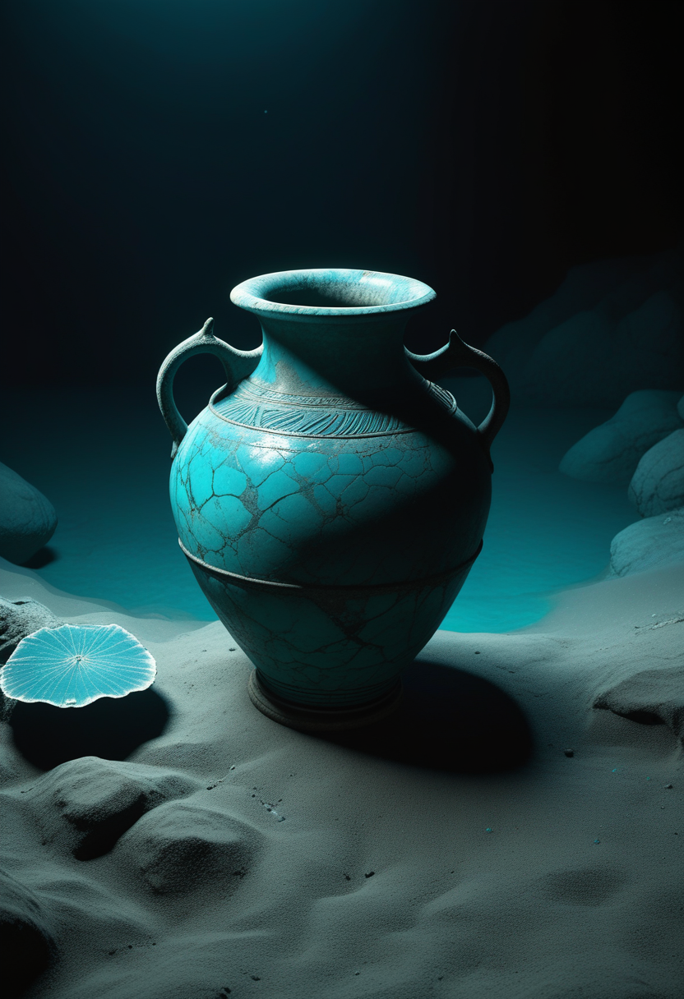
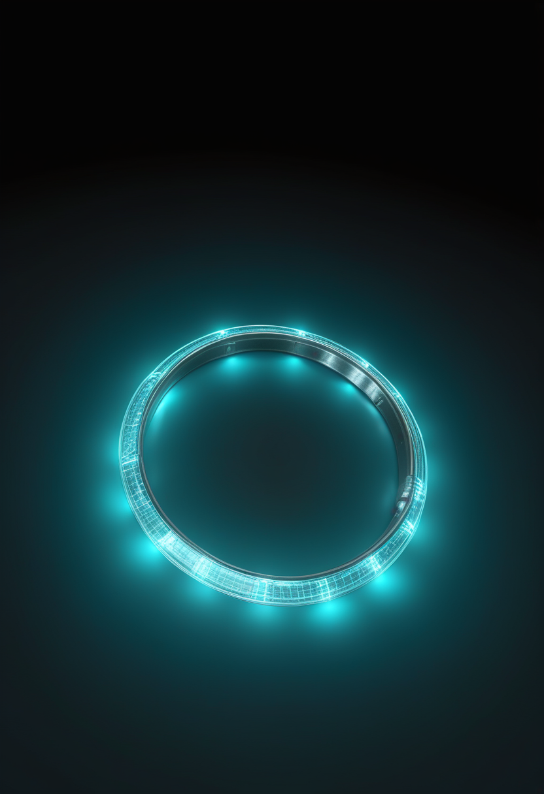
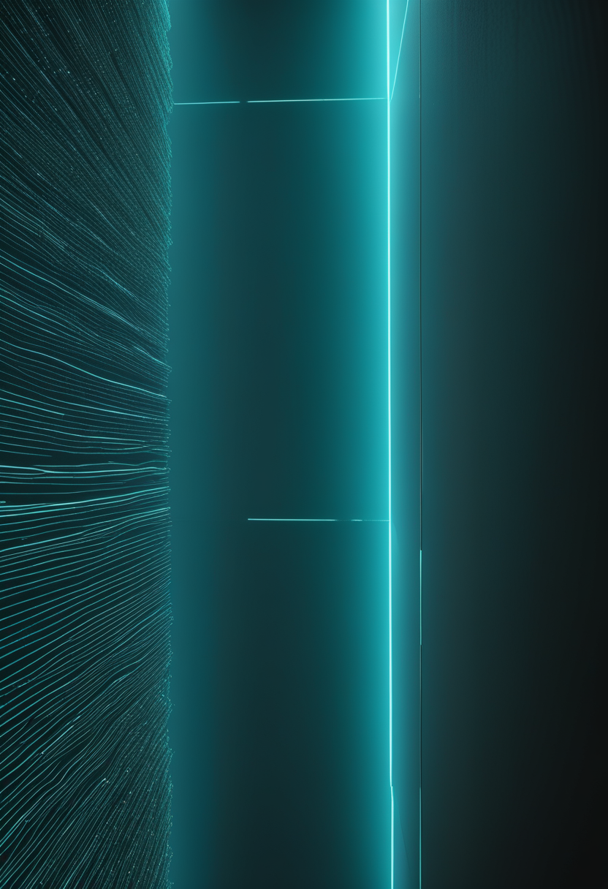
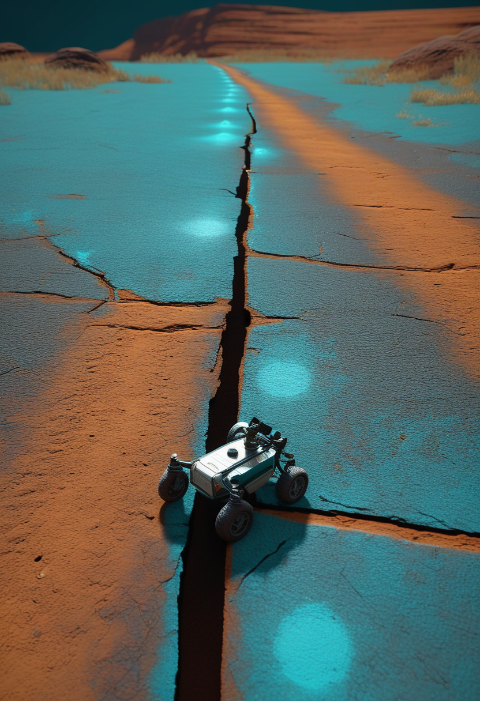
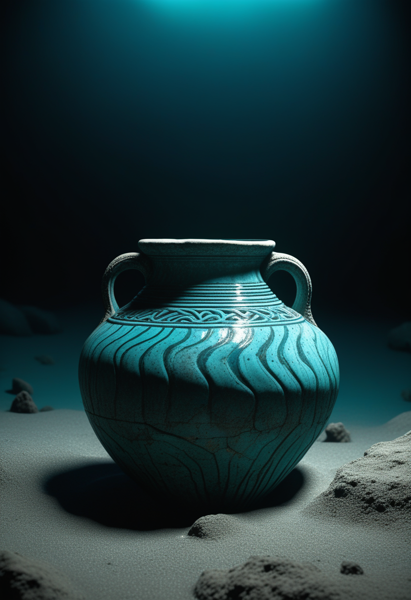
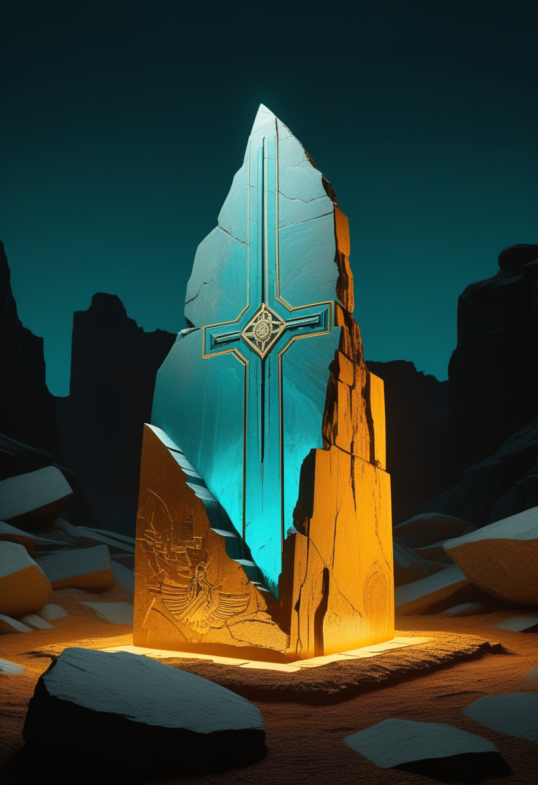

月曜日の便り。トルコ南部ケコバ島沖の水深約30メートルで、紀元前2700〜2200年ごろに沈んだとみられる交易船が見つかり、同国文化観光相は『世界最古の沈没船』と位置づけた。基盤の章では、ケニアのエボラにアフリカCDCのジーン・カセヤ事務局長が現地入りを表明したことと、ケニア国内の接触者追跡率が流行全体の水準を大きく上回っている対比、タンザニアの国境管理強化を届ける。自由の章では、Paradromicsが個人用デバイスへのBCI接続範囲を広げたFDA承認と、Tobiiの研究が示す視線入力の『3〜5mmの壁』を。畏敬の章では、オックスフォード大のハイブリッド量子計算機によるアハラノフ=ボーム効果の再現と、火星探査車パーサヴィアランスの走行距離新記録を。命の章では、イングランドの新生児SMAスクリーニング前倒しの背景にあった15万人超の署名運動を。美の章では今日の一本の詳細に加え、エジプト・ナイル川デルタで見つかったラムセス2世とみられる巨像と、AIは意識を持たないとするブラッドフォード大学の研究を取り上げる。

トルコ文化観光相メフメト・ヌリ・エルソイ氏は10月14日、南部アンタルヤ県ケコバ島沖の水深約30メートルで見つかった沈没船を『世界最古の沈没船』と発表した。木材は残っておらず放射性炭素年代測定はできなかったが、引き揚げた30点以上の壺(アンフォラ)と3つの石錨を他の遺跡の土器と比較し、年代を紀元前2700〜2200年ごろ(4,400〜4,700年前)と推定した。アンフォラはヨルダン渓谷周辺で作られたとみられ、オリーブ油かワインを運んでいた可能性がある。これまで最古とされてきたギリシャ・ヒドラ島沖の『ドコス沈没船』(紀元前2200年ごろ)より古い可能性があるが、年代は土器の比較による推定であり、独立した査読を経た確定値ではない。発掘はアクデニズ大学のハカン・オニズ氏らが2024年から進めてきた。詳細は美の章で。

10月1日に始まったイングランドの新生児SMAスクリーニングの評価運用(バーミンガムを皮切りに7検査機関、新生児の約72%をカバー)は、当初2027年1月予定だった開始が3か月前倒しされたものだった。前倒しの背景には、SMAの子を持つジェシー・ネルソン氏が立ち上げた署名運動があり、15万人近い賛同を集めて議会請願委員会の自動審査基準(10万人)を超え、6月22日にウェストミンスター・ホールで討論が行われた。政府は討論を受け、NHSイングランドによる実運用評価(SENS試験)の前倒しを表明した経緯がある。残る6検査機関(ブリストル・ケンブリッジ・リーズ・リバプール・オックスフォード・ポーツマス)は2027年10月からの計画のままで、ウェールズ・北アイルランドは対象外という限界も残る。
画期的な治療薬が出そろう一方で、『いつ見つけるか』を決めるのは医学だけでなく、家族の声が動かす政治のプロセスでもあることが今回はっきりした。
Paradromicsは8月26日、治験段階の脳コンピュータ接続(BCI)『Connexus』について、本人のノートPCやタブレット、スマートフォンなど個人所有の汎用デバイスとの接続を広げるFDA承認を得たと発表した。これまでは会社支給の専用環境に限られていたが、今後は合意済みの展開・検証手続きを経れば、デバイスごとに個別のFDA承認を取らずに追加できる。対象は重度の運動障害がある人の意思疎通・コンピュータ操作を目指すConnect-One早期実行可能性試験。同社CEOのマット・アングル氏は、ユーザーを特定の計算環境に縛り付けず『本人について回る』BCIへの道が開けたと述べている。

Tobiiが公開した2026年第1四半期の研究ダイジェストは、視線入力デバイスの実効精度がおおむね2〜3cmにとどまる一方、文章の行間は一般に3〜5mm程度しかないと指摘した。読書支援や文字入力に視線入力を直接使おうとすると、精度が一桁足りない計算になる。埋め込み型・低侵襲のBCIが『発話』『接続先の自由度』という新しい軸で前進を重ねる一方、非接触・非侵襲である視線入力は、この精度の壁にここ数週目立った打開策を示せていない。視線で大まかに狙いを絞り、他の入力で確定させるような組み合わせ設計が、現実的な解として意識され始めている。
BCIは『接続先を選ばない』方向に進み、視線入力は依然として精度という同じ壁の前に立っている。埋め込みと非侵襲、両者の守備範囲の違いが今週も改めて浮かんだ。
ケニアでエボラ(ブンディブギョ型)の累計が7例となったことを受け、アフリカCDCは連帯表明を発表し、ジーン・カセヤ事務局長が近く現地入りする意向を示した。ケニア保健省は独自に接触者130人中128人(98.5%)を追跡・隔離済みとしているが、アフリカCDCが示す流行全体(震源地DRCを含む)の接触者追跡率は約80%にとどまり、流行を減速させる目安とされる95%を下回ったままだ。小さく閉じたケニアの輸入例クラスターと、規模で勝る震源地DRCとの間で、同じ『追跡』という言葉が指す現実の差が改めて浮き彫りになった。
タンザニアは10月17日から、ケニアでのエボラ発生を受けて国境管理を強化し、入国者全員に電子健康申告と入国時スクリーニングを課す措置を始めた。入国後にリスクが高いと判定された人には、21日間の毎日の健康観察が求められる。タンザニア自体に確定例は出ていないが、ケニア・DRCの双方と国境を接する立場から、流行がまだ『国内に入っていない国』側の備えとして先手を打った形になる。
ケニアでは支援と追跡率の落差が、タンザニアでは先回りの備えが、それぞれ今日の変化点になった。流行の中心から離れるほど、打てる手は『検知』から『予防』へと性格を変えている。
オックスフォード大学のセバスチャン・サナー博士らのチームは、トラップイオンを使ったハイブリッド量子計算機で、1959年に予言されたアハラノフ=ボーム効果を量子シミュレーションとして再現したとNature Physics誌に発表した。イオンの電子状態にエンコードした量子ビットでゲージ場を、イオンの振動に由来する量子振動子で物質粒子を表現する構成で、閉じたループ内の磁束が、粒子が実際には通らない経路であっても干渉を通じてトンネリングを完全に抑制する様子を観測した。格子ゲージ理論という、従来型コンピュータでは扱いにくい物理の検証に量子計算機を使う試みの一例で、研究チームは2022年からこの実験の構築を進めてきたという。

NASAは、火星探査車パーサヴィアランスが10月11日(火星日で2006ソル目)、91.31メートルの走行により総走行距離45.22kmに達し、2004〜2018年に稼働したオポチュニティの記録(45.16km)を抜いて、地球以外の天体での総走行距離の史上最長記録を更新したと発表した。『シャルムの湖』付近から『イドゥビ』に向かう途中での達成で、ギネス世界記録にも認定された。NASAのプロジェクト責任者は、この記録は今後何年も更新され続ける見込みだと述べている。
67年前の理論予言の再現と、地球以外の天体での走行距離という最も地道な記録更新が、同じ週に並んだ。宇宙を理解する歩みは、量子の抽象と車輪の具体という両極から同時に進む。

トルコ南部アンタルヤ県、ケコバ島沖の水深約30メートルで見つかった沈没船を、同国文化観光相メフメト・ヌリ・エルソイ氏が10月14日『世界最古の沈没船』と発表した。木材は腐朽して残っておらず放射性炭素年代測定はできなかったため、引き揚げた30点以上のアンフォラ(壺)と3つの石錨を他の遺跡の土器様式と比較し、紀元前2700〜2200年ごろ(4,400〜4,700年前)と推定した。アンフォラはヨルダン渓谷周辺で作られ、オリーブ油かワインを運んでいたとみられる。これまで最古とされてきたギリシャ・ヒドラ島沖の『ドコス沈没船』(紀元前2200年ごろ)の記録を更新する可能性があるが、年代は様式比較による推定にとどまり、独立した査読論文としての確定はこれからだ。発掘はアクデニズ大学のハカン・オニズ氏らが2024年の発見・試掘を経て今年本格化させた。

エジプト観光・古代遺物省は10月中旬、ナイル川デルタのガルビーヤ県ベヘベイト・エルハガル村で、王像2体の頭部・胴体上部と、ヒエログリフを刻んだピンク花崗岩のブロックが見つかったと発表した。発端は住民ハーレド・エルシャハト・ハリール氏が自宅敷地内で彫刻の施された石を見つけ、当局に通報したこと。最高文化財評議会による緊急発掘の結果、1体はラムセス2世と確認され、もう1体も同じ王を表す可能性が高いとされる。頭部は二重冠(プシェント)をかぶり高さ約1.6メートル、全身像は建造当時およそ8.5メートルに達したとみられる。背面柱の碑文には王の五つの称号の一つ『ホル・カナクト・メリ・マアト』が刻まれていた。像が元々この場所に立っていたのか後世に運び込まれたのかは未確定で、発掘は続いている。
英ブラッドフォード大学の2026年の研究は、AIが意識があるかのように振る舞っても、それ自体は意識・自己認識・生命性の証拠にはならないと結論づけた。人間はAIの流暢な応答や感情表現的な言い回しに『意識のようなもの』を読み取りがちだが、研究チームはその帰属のされ方自体を検証し、振る舞いの模倣と内実の有無は別の問題だと整理している。MIT Technology Reviewも8月20日の論考で、神経科学や動物の権利の語彙を借りて『AIの意識』を論じること自体が、かえって議論を曇らせると指摘した。デジタル化・AI倫理をめぐる議論は、『何を測れば意識と言えるのか』という線引きの精度を競う段階に入っている。
4,700年前の交易船からラムセス2世の巨像まで、人類史の物証は今週も地中から姿を現した。一方でAIの『意識』は、どれだけ振る舞いを精緻にしても内実の証明にはならないという限界が改めて示されている。
月曜日の便り。トルコ・ケコバ島沖で見つかった沈没船が『世界最古』と発表され、4,700年前の交易の痕跡が地中海の海底から姿を現した。基盤の章では、ケニアのエボラにアフリカCDC事務局長が現地入りを表明したことと、ケニアとDRC全体の接触者追跡率の落差、タンザニアの国境管理強化を届けた。自由の章では、Paradromicsが個人用デバイスへのBCI接続範囲を広げたFDA承認と、Tobiiの研究が示す視線入力の『3〜5mmの壁』を伝えた。畏敬の章では、オックスフォード大のハイブリッド量子計算機によるアハラノフ=ボーム効果の再現と、火星探査車パーサヴィアランスの走行距離新記録を取り上げた。命の章では、イングランドの新生児SMAスクリーニング前倒しの背景にあった15万人超の署名運動を届けた。美の章では、ラムセス2世とみられる巨像の発見と、AIは意識を持たないとするブラッドフォード大学の研究を伝えた。
では、また明日の朝に。 — JaH